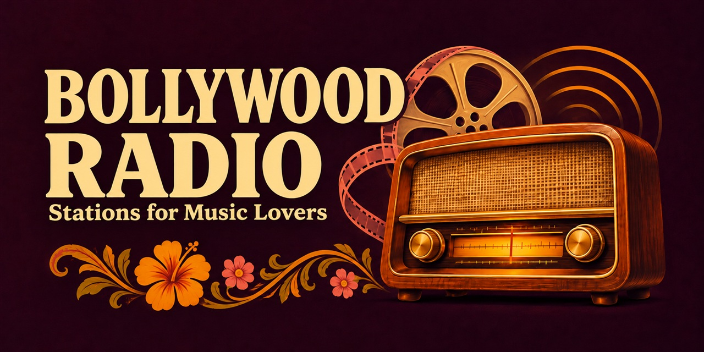

<!doctype html>
<html lang="en">
<meta charset="utf-8">
<meta name="viewport" content="width=device-width,initial-scale=1">
<meta name="theme-color" content="#240a16">
<meta name="description" content="Bollywood Radio. Stations for Music Lovers.">
<title>Bollywood Radio</title>
<link rel="preconnect" href="https://fonts.googleapis.com">
<link href="https://fonts.googleapis.com/css2?family=Cormorant+Garamond:wght@600;700&family=DM+Sans:wght@400;500;600&display=swap" rel="stylesheet">
<style>
:root{color-scheme:dark;--gold:#f8d68a;--muted:#c9a9ae;--line:#ffffff20}
*{box-sizing:border-box}body{margin:0;background:radial-gradient(ellipse at top,#4c1828,#180a12 70%);color:#fff2db;font:16px 'DM Sans',sans-serif;min-height:100vh}
button,input,select{font:inherit}button,select{cursor:pointer}button{border:1px solid var(--line);color:inherit;background:#ffffff08;border-radius:30px;padding:12px 20px}button:hover{background:#ffffff18}button:focus-visible,input:focus-visible,select:focus-visible{outline:3px solid var(--gold);outline-offset:3px}
main,footer{max-width:980px;margin:auto;padding:24px}
body{background:#210513}
main{padding-top:0}.player{background:transparent}.cover{width:100%;display:block;aspect-ratio:2;object-fit:cover;mask-image:linear-gradient(to bottom,#000 75%,transparent);-webkit-mask-image:linear-gradient(to bottom,#000 75%,transparent)}.content{padding:0 36px 20px;text-align:center}.station-picker{margin-top:24px}.station-picker button{min-width:180px;font-size:18px}
h1{font:600 clamp(28px,5vw,44px) 'Cormorant Garamond',serif;margin:8px 0}#status{color:var(--muted);min-height:24px;margin:8px 0 24px}.controls{display:flex;align-items:center;justify-content:center;gap:18px}.play{width:82px;height:82px;background:var(--gold);color:#260d18;font-size:22px;border:0}.play:hover{background:#ffe6ae}.secondary{display:flex;flex-wrap:wrap;align-items:center;justify-content:space-between;gap:20px;border-top:1px solid var(--line);margin-top:28px;padding-top:22px}.volume{display:flex;align-items:center;gap:12px}input[type=range]{width:110px;accent-color:var(--gold)}select,input[type=search]{background:#341524;color:#fff2db;border:1px solid var(--line);border-radius:12px;padding:12px}footer{text-align:center;color:var(--muted);font-size:14px;padding:28px}footer strong{color:var(--gold)}
dialog{width:min(620px,94vw);max-height:85dvh;border:1px solid var(--line);border-radius:22px;background:#240f1b;color:#fff2db;padding:24px}dialog::backdrop{background:#08030bbb;backdrop-filter:blur(8px)}.heading{display:flex;justify-content:space-between;align-items:center}h2{font:600 32px 'Cormorant Garamond',serif;margin:0}.filters{display:flex;gap:10px;margin:22px 0}input[type=search]{width:100%;min-width:0}.filters button[aria-pressed=true]{background:var(--gold);color:#240f1b}#list h3{color:var(--gold);font-size:14px;margin:24px 0 8px}.station{display:flex;align-items:center;border-bottom:1px solid var(--line)}.station button:first-child{text-align:left;flex:1;border:0;border-radius:8px;padding:16px 8px}.station .star{border:0;font-size:22px;padding:10px}.station .active{color:var(--gold)}.note{color:var(--muted);font-size:14px}
.secondary{justify-content:center;border-top:0;margin-top:16px}
.play{border-radius:50%;flex-shrink:0}
footer{font-family:'Cormorant Garamond',serif;font-style:italic;font-size:18px}
@media(max-width:540px){main{padding:0 12px}.content{padding:12px 6px 20px}.controls{gap:8px;flex-wrap:wrap}.controls button{padding:12px}.controls .play{width:70px;height:70px}.secondary{justify-content:center;flex-direction:column;gap:18px}.filters{flex-wrap:wrap}h1{font-size:32px}dialog{padding:18px}}
@media(prefers-reduced-motion:no-preference){button{transition:background .15s}}
</style>
<main><section class="player" aria-label="Radio player">

<div class="content"><h1 id="title">Loading stations…</h1>
<p id="status" role="status" aria-live="polite">Getting your station list</p>
<div class="controls"><button id="previous" aria-label="Previous station">Previous</button><button class="play" id="play" aria-label="Play">▶</button><button id="next" aria-label="Next station">Next</button><button id="favourite" aria-label="Add to favourites" aria-pressed="false">♡</button></div>
<div class="station-picker"><button id="browse" aria-haspopup="dialog" aria-controls="drawer">Stations ☰</button></div>
<div class="secondary"><label class="volume">Volume <input id="volume" type="range" min="0" max="1" step=".01" value=".8"></label><label>Sleep timer <select id="sleep"><option value="0">Off</option><option value="15">15 minutes</option><option value="30">30 minutes</option><option value="60">60 minutes</option><option value="90">90 minutes</option></select></label><span id="timer" class="note"></span></div>
</div></section></main>
<footer>Created by <strong>K.a.R.a.N</strong></footer>
<dialog id="drawer"><div class="heading"><h2>Find your station</h2><button id="close" aria-label="Close station list">✕</button></div><div class="filters"><input id="search" type="search" placeholder="Search stations" aria-label="Search stations"><button id="only" aria-pressed="false">Favourites</button></div><p class="note">Stations that fail to play are skipped for this visit.</p><div id="list"></div></dialog>
<audio id="audio" preload="none"></audio>
<script src="https://cdn.jsdelivr.net/npm/hls.js@1.6.13/dist/hls.min.js"></script>
<script src="app.js"></script>
</html>
